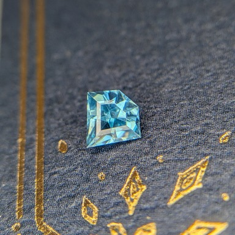

生成AIの導入・業務組み込み
文書検索、文章作成、情報整理など、日々の業務に生成AIを組み込みます。人が確認する箇所や運用手順も設計します。
活用例 社内資料をもとに質問に答える仕組み
生成AIの実績を見る文書検索、文章作成、情報整理など、日々の業務に生成AIを組み込みます。人が確認する箇所や運用手順も設計します。
活用例 社内資料をもとに質問に答える仕組み
生成AIの実績を見る業務の流れを整理し、既存システムの改修や新規開発を企画から支援します。導入後の改善にも対応します。
開発例 建材調達、会議室予約、部品見積もり管理
業務システムの実績を見る現場の機器をネットワークにつなぎ、データを収集・表示したり、アプリから機器を操作したりする仕組みを開発します。
開発例 電力監視、センサー連携、機器制御
IoTの実績を見る同じ人手不足でも、事業の規模や利益への影響、現場が改善に割ける時間によって、優先すべき対応は変わります。経営側が重視する成果と、予算や人員の制約を確認し、御社の判断基準をつくります。
売上、費用、人手、品質のどこに課題があるかを伺います。事業への影響を踏まえて、調べる業務を絞ります。
担当者への聞き取りと実際の資料・記録から、作業の手順、件数、工数、費用、確認・承認の流れを整理します。
手順の見直し、採用・外注、既存ツール、AI活用、専用システムを比べます。効果、総費用、運用を担える人、安全性を確認します。
すでにAIを使っている場合は、指示や確認・修正に残る手間も確認します。費用は契約や導入、研修、保守まで含め、減らせる作業時間と実際に減る支出を分けて整理します。
改善策の選び方と、実行を誰が担うかを社内で検討できるよう、調査結果と判断の根拠を資料にまとめます。
誰が、何を、どの頻度で行うかを整理します。担当者、工数、使用ツールと、情報や承認の流れを記載します。
手戻り、重複作業、特定の人への依存など、改善が必要な箇所を示します。情報の扱いや権限を確認した結果も記載します。
どの程度の改善が必要か、いくらまで投資できるかを明記します。改善策ごとの効果、総費用、必要な人員と技能、運用負担を比較します。
着手順、担当、時期を整理します。社内で進められる範囲と、専門家や委託先に任せる候補を具体化します。
社内に確保できる人・時間・技能を踏まえて、どの業務を自社で担い、どこに外部の力を借りるかを決められます。
必要な時間と技能を社内で確保できる場合は、納品した計画をもとに、担当者を決めて改善を進めます。
社内で改善を進めながら、初期設定、研修、効果の確認など、支援が必要な部分を専門家に相談します。
開発・保守や一部の業務を外部に任せる場合は、依頼範囲、期待する成果、確認方法を納品資料から整理できます。
業務一覧やフロー図が手元になくてもご相談いただけます。経営課題と対象業務を伺い、調査範囲・納品物・費用をご提案します。
代表が過去に参画した案件を含みます。
生成AI
2023年から、関連する文書を検索して回答を生成する検索・対話システムや、複数の処理をつなぐ業務手順の開発に取り組んできました。
リアルタイム音声認識を使うアシスタントや文章作成支援の開発経験もあります。
業務システム・Web
建材調達のデジタル化サービス、会議室予約システム、部品見積もり管理システムなどの開発に携わりました。
金融プラットフォームやメタバース向けのコンテンツ管理システムの開発経験もあります。
IoT・機器連携
電力監視システム、位置測定システム、粒子センサー連携など、機器のデータを扱う開発に携わりました。
医療用の装着型機器、心拍測定機器、スマートシューズと連携する開発経験もあります。
困っている業務と改善したい点を伺います。
業務の手順、工数、費用を整理します。
取り組む施策と費用、進め方をご提示します。
対象を絞って作り、現場で試します。
使い始めたあとの課題に対応します。
診断は対象業務と調査範囲、開発・運用は必要な機能と支援範囲を確認し、個別にお見積りします。
現場でどんな作業に時間がかかり、誰がどこで判断しているのか。まずそこを整理し、必要な技術を選びます。エンジニアとしての開発経験と、自社サービスを運営してきた経験を生かし、導入後も現場で使い続けられる仕組みをつくります。
代表取締役 國舛 等志
家電ベンチャーの創業期にエンジニアとして参画。その後、独立、事業の立ち上げ、会社の売却を経験しました。Web・モバイル・デスクトップアプリ、ブロックチェーン、IoT機器の開発や、中小企業の生成AI導入・研修に携わってきました。
